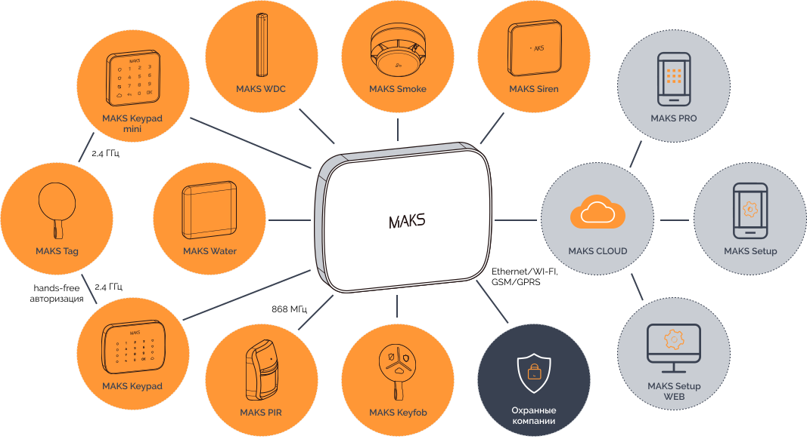

Инновации
MAKS PRO – новая разработка беспроводной охранной сигнализации от компании Integrated Technical Vision Ltd. Предназначена для охраны квартир, офисов и коттеджей.
Дизайн системы и её элементов максимально приближен к дизайну современной квартиры, дома, офиса, и поэтому система может легко вписаться в любой интерьер, благодаря различным цветовым гаммам оборудования.
При проектировании системы учтены все лучшие характеристики как отечественных, так и зарубежных аналогов. Стильная и компактная система MAKS PRO – доступна и проста для самостоятельной установки, а для специалистов в области пультовой охраны её наладка и подключение к центру мониторинга займет не более 10 минут
Особенности системы
Как это работает
Простота установки системы
Теперь простота установки системы доступна для всех категорий потребителей.
- Для установки не нужно разбирать элементы системы, доступ к электронике ограничен, что значительно повышает отказоустойчивость системы.
- Большинство элементов системы имеют кронштейны с креплением типа "байонет".
- Самый требовательный к надежности и простоте установки магнитоконтактный датчик MAKS WDС имеет уникальную капсульную конструкцию и может монтироваться на двусторонний скотч или саморезы.
- Система использует популярные типоразмеры элементов питания AAA, CR123, CR2032
Простота настройки
Полная настройка со смартфона с помощью мобильного приложения MAKS Setup через MAKS Cloud.
Полная настройка с помощью WEB-версии приложения MAKS Setup. Приложение очень удобно для стационарных условий центра мониторинга. Не выезжая на объект, можно провести полную настройку и диагностику системы.
-
Элементы системыДобавление и настройка всех беспроводных элементов системы
-
Настройки доступаДобавление и настройка всех беспроводных элементов системы
-
Технические параметрыДобавление и настройка всех беспроводных элементов системы
-
Проверка связиДобавление и настройка всех беспроводных элементов системы
-
Охрана и мониторингДобавление и настройка всех беспроводных элементов системы
-
ОбновлениеДобавление и настройка всех беспроводных элементов системы
-
Журнал событийДобавление и настройка всех беспроводных элементов системы
Центры мониторинга и MAKS Cloud
Мы позаботились о защите ваших интересов и безопасности в MAKS Cloud. Подмножество охранных приборов, принадлежащих учетной записи центра мониторинга, защищено.
Прибор невозможно переключить на другой центр мониторинга, предварительно не отключив на предыдущем центре.
Также выполняется полное протоколирование действий по настройке системы инженерным составом.
Коммуникация с центрами мониторинга
Современный канал связи WiFi или Ethernet, резервированный GSM / GPRS коммуникатором, обеспечивает мгновенную и стабильную связь с приемными устройствами центров мониторинга, а также смартфонами пользователей.
Для резервирования используется 2 IP адреса приемников центра мониторинга и уникальный протокол одно-тональной голосовой GSM связи с модемами приемника MAKS Ethernet или Гермес-Т.
Простота управления
Для пользователя основным элементом управления системой является смартфон с приложением MAKS PRO, работающий с устройствами через облако MAKS Cloud.
Приложение используется и при работе в составе пультовой системы охраны, и в автономном режиме. Оно максимально простое и не перегружено излишней информацией.
-
Постановка под охрануПостановка “Остаюсь” и постановка “Ухожу”
-
Снятие с охраныСнятие с охраны одним движением
-
ИсторияПросмотр журнала событий
-
УведомленияПолучение уведомлений о тревожных событиях системы, постановке и снятии с охраны
-
Управление устройствамиУправление группами охраны и исполнительными устройствами